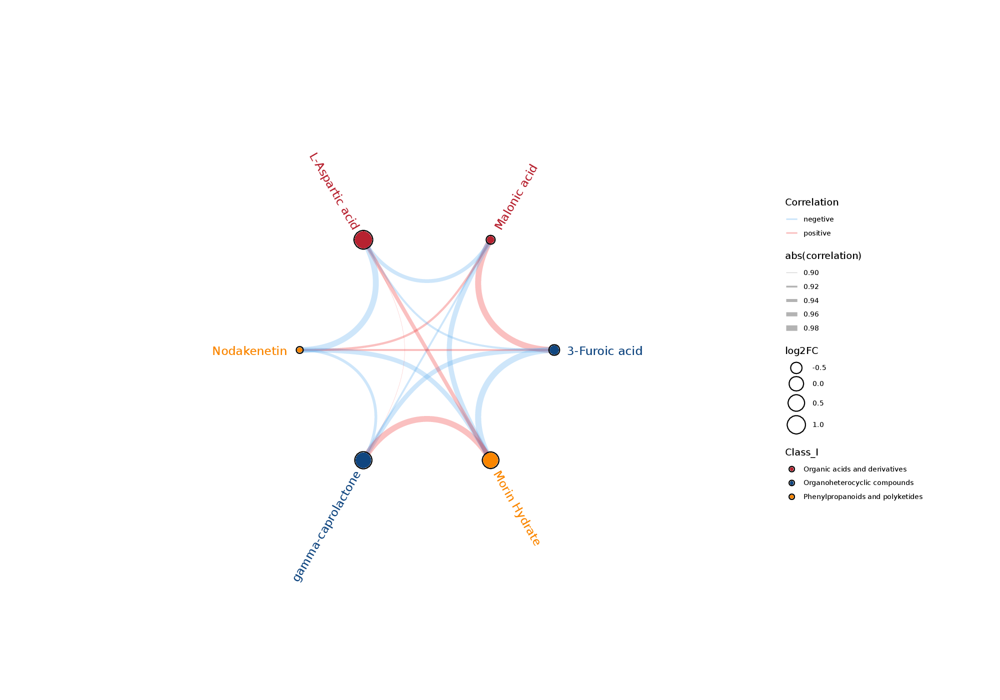

非靶代谢（LC-MS）分析报告
项目信息
项目编号：X101SC24087200-Z01
项目名称：武夷学院24个茶叶样本非靶代谢分析技术服务（委托）合同
报告时间：2024-12-05
报告编号：X101SC24087200-Z01-J001-report1
项目总结
本项目采用非靶向代谢组学技术开展课题研究，在该项目中的4个样本共鉴定到正离子模式代谢物1012个，负离子模式代谢物440个。按照VIP > 1.0，FC > 1.2 或 FC < 0.833 且P-value< 0.05的标准进行差异代谢物的筛选。例如在RS11.vs.RS12比较组中有18个正离子模式代谢物差异显著，其中2个代谢物上调，16个代谢物下调；有6个负离子模式代谢物差异显著，其中3个代谢物上调，3个代谢物下调。基于上述数据，对所有鉴定到的代谢物进行了系统的通路注释，并对所有差异代谢物进行了差异分析和KEGG分析。具体的工作流程和分析内容如下：
一、研究概述
代谢组（Metabolome）是指细胞、组织、器官或者生物体内的所有小分子代谢物（主要是相对分子量1000 Da以内的内源性小分子）的集合。
代谢组学（Metabolomics）是继基因组学、转录组学、蛋白质组学后出现的新兴组学技术，是系统生物学的重要组成部分。代谢组学旨在考察生物体系（细胞、组织等）受到刺激或扰动后，其代谢产物的变化或随时间规律发生的变化，通过筛选实验组与对照组的差异代谢物，研究差异代谢物参与的生物过程，揭示其参与的生命活动机制。
代谢组学是更接近于表型的组学，它是转录组学和蛋白质组学的延伸，能够更直接、更准确地反映生物体的生理状态。Bill Lasley, UC Davis曾指出“基因组学和蛋白质组学告诉你什么可能会发生，而代谢组学则告诉你什么确实发生了”。
非靶向代谢组学（Untargeted metabolomics）以发现为目的，需尽可能多地检测到生物样本中的代谢物，最大程度反映总的代谢物信息，所以非靶向代谢组必须要匹配高分辨质谱仪，分辨率越高的质谱检测到的代谢物越多。超高效液相色谱（UHPLC）与高分辨质谱联用，即液质联用（LC-MS/MS）技术，由于其检测物质范围广、前处理简单等优势，在非靶向代谢组学研究中应用越来越广。
二、工作流程
1.实验流程
本项目基于液质联用（LC-MS）技术[1-2]进行非靶向代谢组学研究，实验流程主要包括：样本的代谢物提取、LC-MS/MS 检测以及数据分析等。由于代谢组学具有代谢物变化迅速，代谢物种类繁多，浓度差异大，化学性质各异，数据信息庞大等特点，导致从样本收集、保存、代谢物提取、质谱检测的每一个环节都有可能会对数据的质量产生影响，而数据质量又会直接影响后续信息分析的结果。为从源头上保证检测数据的准确性、可靠性，诺禾致源对每一个实验步骤都严格把控，实现代谢组学标准化操作，从根本上确保高质量数据的产出。实验流程图如下：
注：QC样本是由实验样本等体积混合制成，在实验样本LC-MS/MS进样前、进样中和进样后上机检测。
进样前的前3个QC用于监测进样前仪器状态及平衡色谱-质谱系统，之后的3个QC进行分段扫描，连同实验样本得到的二级谱图用于代谢物的定性。样本检测中间插入的QC用于评价整个实验过程中系统稳定性并进行数据质控分析。
2.信息分析流程
首先将质谱检测得到的原始文件（.raw）导入Compound Discoverer 3.3（以下简称CD3.3）软件中，进行谱图处理及数据库搜库，得到代谢物的定性定量结果，然后对数据进行质控保证数据结果的准确度、可靠性。接下来对代谢物进行多元统计分析，包括主成分分析（PCA）、偏最小二乘法判别分析（PLS-DA）等，揭示不同组别的代谢模式差异。利用层次聚类（HCA）和代谢物相关性分析，揭示样本之间及代谢物和代谢物之间的关系。最后，通过代谢通路等功能分析解释代谢物相关的生物学意义。非靶向代谢组学生物信息分析流程图如下：
注：此分析流程图包括该产品的所有分析内容，本项目具体分析内容以此报告为准。
三、信息分析结果
1 样本信息
表1.1 代谢样本信息
| Raw name | Samples name | Group names | ID num |
|---|---|---|---|
| FZTM240111957-1A | R1 | RS11 | 1 |
| FZTM240111958-1A | R2 | RS11 | 2 |
| FZTM240111959-1A | R3 | RS12 | 3 |
| FZTM240111960-1A | R4 | RS12 | 4 |
| QC1 | QC1 | QC | 5 |
| QC2 | QC2 | QC | 6 |
| QC3 | QC3 | QC | 7 |
注：报告只展示了部分结果，详细结果可见Result/1.MetQuant-QC/sam_qc_infor_{pos,neg}.xls (1) Raw name：诺禾提取编号 (2) Samples name：样本名称 (3) Group name：组别名称 (4) ID num：样本名称顺序（PCA、PLS-DA图对应的编号）
2 代谢物定性定量分析
2.1 数据预处理及代谢物鉴定
基于高分辨质谱（HRMS）检测技术，非靶向代谢组可尽可能多地检测到样本中的分子特征峰。结合由标准品构建的高质量mzCloud数据库搭配mzVault及MassList数据库，对分子特征峰进行匹配鉴定，能够尽可能多地鉴定到生物体系中的代谢物，最大程度反映总代谢物的信息。
下机原始数据使用CD3.3数据处理软件进行数据预处理。首先通过保留时间、质荷比等参数简单筛选，对于不同样本先进行峰对齐，使鉴定更准确；随后根据设置的ppm及加合离子等信息进行峰提取，同时对峰面积进行定量。然后比对高分辨二级谱图数据库mzCloud和mzVault以及MassList一级数据库检索（搜库），进行代谢物鉴定，具体原理如下：根据一级质谱中母离子的质荷比（m/z）确定代谢物的分子量，通过质量数偏差（ppm）以及加合离子等信息进行分子式预测，然后与数据库进行匹配；含有二级谱图的数据库根据实际二级谱图与数据库中每个代谢物的碎片离子、碰撞能等信息进行匹配，实现代谢物的二级鉴定。然后保留QC样本中变异系数（Coefficient of Variance, CV）小于30%[3]的代谢物作为最终的鉴定结果，进行后续分析。
2.2 代谢物定量结果
使用CD3.3数据处理软件，对样本中检测到的色谱峰进行积分，其中每个特征峰的峰面积表示一个代谢物的相对定量值，使用总峰面积对定量结果进行标准化，最后得到代谢物的定量结果。结果如表2.1所示：
表2.1 代谢物定量结果
| Compound_ID | Name | Formula | Molecular Weight | RT [min] | m/z | mzCloud_Results | mzVault_Results | MassList_Results | Class_I | Class_II | Class_III | Class_IV | pos_R1 | pos_R2 | pos_R3 |
|---|---|---|---|---|---|---|---|---|---|---|---|---|---|---|---|
| Com_1_pos | Caffeine | C8 H10 N4 O2 | 194.08055 | 5.376 | 195.08783 | Full match | Full match | No results | Organoheterocyclic compounds | Imidazopyrimidines | Purines and purine derivatives | Xanthines | 151216960386.72955 | 112993436951.13734 | 132270358377.53926 | Com_5_pos | Oleamide | C18 H35 N O | 281.27189 | 9.839 | 282.27914 | Full match | No results | Full match | Lipids and lipid-like molecules | Fatty Acyls | Fatty amides | Fatty amides | 40942895391.36237 | 10463849896.94257 | 44782582873.75527 | Com_7_pos | Epicatechin | C15 H14 O6 | 290.07909 | 5.268 | 291.08636 | Full match | Full match | Full match | Phenylpropanoids and polyketides | Flavonoids | Flavans | Catechins | 12366519938.998058 | 11333400000.638344 | 15994085402.92621 | Com_9_pos | Hexadecanamide | C16 H33 N O | 255.25629 | 9.61 | 256.26355 | Full match | No results | No results | Lipids and lipid-like molecules | Fatty Acyls | Fatty amides | Fatty amides | 12382684807.520987 | 2427940229.013776 | 14253681229.791939 | Com_11_pos | 3-Methylcrotonylglycine | C7 H11 N O3 | 157.07406 | 1.87 | 158.08134 | Full match | No results | Full match | Organic acids and derivatives | Carboxylic acids and derivatives | Amino acids, peptides, and analogues | N-acyl-alpha amino acids | 24907026479.959354 | 40628974123.17861 | 10024446891.874802 | Com_14_pos | ethyl 4-amino-2-(methylsulfanyl)-1,3-thiazole-5-carboxylate | C7 H10 N2 O2 S2 | 236.03009 | 1.318 | 219.0268 | Invalid mass | No results | No results | 5590946958.125957 | 6599074135.972506 | 7463463807.781547 |
注：报告只展示了部分结果，详细结果可见Result/1.MetQuant-QC/meta_intensity_class_{pos,neg}.xls。 (1) Compound_ID/ID：代谢物ID（该ID是为了方便检索及后续分析而随机添加的编号，无实际意义） (2) Name：代谢物的描述信息 (3) Formula：代谢物的分子式 (4) Molecular Weight：分子量 (5) RT[min]：保留时间 (6) m/z：质荷比 (7) *_Results：搜库结果（mzCloud_Results：mzCloud搜库结果; mzVault_Results：mzVault搜库结果;MassList_Results: MassList搜库结果） (8) Class_*：代谢物I~IV级分类 (9) 其他列为各个样品的相对定量信息
2.3 代谢物分类情况
对本项目中鉴定到的代谢物的化学分类进行统计，绘制饼状图以反映检出代谢物的分类及各分类中包含的数目，代谢物Class I分类饼状图见图2.3（高清版的图片，可见结果文件）。
图2.3 代谢物分类饼状图
对应的结果目录：Result/1.MetQuant-QC/Pie_Chart_{pos,neg}.{png,pdf}
3 数据质控
代谢组具有易受外界因素干扰且变化迅速的特点，因此，数据质量控制（Quality Control，QC）是获得稳定性和准确性的代谢组结果的必要步骤。尤其是当样本量大的时候，样品上机检测需要一定的时间，代谢物检测过程中仪器的稳定性、信号响应强度是否正常就显得尤为重要。质控能够及时发现异常，尽早解决问题，以保证最终采集数据的质量。
3.1 QC样本相关性分析
基于代谢物的相对定量值来计算QC样本之间的pearson相关系数[4]，QC样本相关性越高（|r|越接近于1）说明整个检测过程稳定性越好，数据质量越高。QC样本相关性见图3.1（高清版的图片，可见结果文件）。
图3.1 QC样本相关性分析
对应的结果目录：Result/1.MetQuant-QC/Correlation/cor_pearson_{pos,neg}.{png,pdf,xls}
3.2 总样本PCA分析
主成分分析（Principal component analysis, PCA）是将一组可能存在相关性的变量，通过正交变换转换为一组线性不相关变量的统计方法，转换后的这组变量即称为主成分。代谢组数据可以被认为是一个多元数据集， PCA则可以将代谢物变量按一定的权重通过线性组合进行降维，然后产生新的特征变量，通过主要新变量（主成分）的相似性对其进行归类，从总体上反映各组样本之间的总体代谢差异和组内样本之间的变异度大小。使用MetaX[5]软件对数据进行对数转换及标准化处理。
将所有实验样本和QC样本提取得到的峰进行PCA分析。QC样本差异越小说明整个方法稳定性越好数据质量越高，体现在PCA分析图上就是QC样本的分布会聚集在一起。见图3.2（高清版的图片，可见结果文件）:
图3.2 总样本PCA分析
注：图中横坐标PC1和纵坐标PC2分别表示排名第一和第二的主成分的得分，不同颜色的散点表示不同实验分组的样本，椭圆为95%的置信区间（生物学重复数目小于4时，无法展示95%的置信椭圆）。
对应的结果目录：QC 及所有代谢样本的总 PCA 图见Result/1.MetQuant-QC/Samples_QC_{pos,neg}-PCA[.3D].{png,pdf}；所有代谢样本的总 PCA 图见Result/1.MetQuant-QC/Samples_{pos,neg}-PCA[.3D].{png,pdf}
4 代谢物通路及分类注释
对鉴定到的代谢物进行功能和分类注释，主要的数据库包括KEGG、HMDB、LIPID MAPS等。通过利用这些数据库对鉴定到的代谢物进行注释，以了解不同代谢物的功能特性及分类情况。
- KEGG通路注释
- HMDB分类注释
- LIPID MAPS分类注释
在生物体内，不同代谢物相互协调行使其生物学功能，基于Pathway的分析有助于更进一步了解其生物学功能。KEGG全称是Kyoto Encyclopedia of Genes and Genomes，包含了多个数据库，其中KEGG PATHWAY数据库（https://www.genome.jp/kegg/pathway.html）是代谢通路的集合，主要将生物代谢通路分为七大类：新陈代谢（Metabolism）、遗传信息加工（Genetic Information Processing）、环境信息加工（Environmental Information Processing）、细胞过程（Cellular Processes）、生物体系统（Organismal Systems）、人类疾病（Human Diseases）和药物开发（Drug Development），每个分类又再细分为二级分类和三级分类。通过Pathway分析可以确定代谢物参与的最主要的生化代谢途径和信号转导途径。KEGG通路注释结果如图4.1所示：

图4.1 KEGG通路注释
注：横坐标代表代谢物数目，纵坐标代表注释到的KEGG通路；该图展示的是Pathway一级分类下各二级分类注释到的代谢物数目。
对应的结果目录：基于KEGG数据库的通路注释结果见Result/2.MetAnnotation/KEGG/meta_{pos,neg}_kegg_anno_category.xls；KEGG注释结果图见Result/2.MetAnnotation/KEGG/meta_{pos,neg}.KEGG.Anno.{png,pdf}；代谢物 KEGG 注释结果表格见Result/2.MetAnnotation/KEGG/meta_{pos,neg}.KEGG.Anno.xls
HMDB的全称是Human Metabolome Database（https://hmdb.ca/metabolites），包含有关人体中发现的小分子代谢物及其生物学作用、生理浓度、疾病关联、化学反应、代谢途径等详细信息的数据库。我们通过HMDB数据库注释，可以快速获取代谢物的分类信息。HMDB的注释结果如图4.2所示：

图4.2 HMDB分类注释
注：横坐标代表代谢物数目，纵坐标代表注释到的HMDB分类；该图展示的是HMDB中二级分类（SuperClass）注释到的代谢物数目。
对应的结果目录：基于HMDB数据库的分类注释结果见Result/2.MetAnnotation/HMDB/meta_{pos,neg}_hmdb_anno_category.xls；HMDB 分类注释结果图见Result/2.MetAnnotation/HMDB/meta_{pos,neg}.HMDB.Anno.{png,pdf}；代谢物 HMDB 注释结果表格见Result/2.MetAnnotation/HMDB/meta_{pos,neg}.HMDB.Anno.xls
LIPID MAPS是包含了生物相关的脂质结构以及注释的数据库，是目前世界上最大的公共脂质数据库。LIPID MAPS数据库对脂质的八大类及其子分类进行注释，八大类分别是：1）脂肪酸类 (Fatty Acids，FA)；2）甘油脂类 (Glycerolipids，GL)；3）甘油磷脂类 (Glycerophospholipids，GP)；4）鞘脂类 (Sphingolipids，SP)；5）固醇脂类 (Sterol Lipids，ST)；6）孕烯醇酮脂类 (Prenol Lipids，PR)；7）糖脂类 (Saccharolipids，SL)；8）多聚乙烯类 (Polyketides，PK)。每个类别又具有各自的下一级分类。LIPID MAPS数据库的注释结果见图4.3。
图4.3 LIPID MAPS分类注释
注：横坐标代表代谢物数目，纵坐标代表注释到的LIPID MAPS脂质分类；该图展示的是LIPID MAPS中8大脂质分类（Category）下的主层级分类（Main_Class）注释到的（脂质）代谢物数目。
对应的结果目录：基于Lipidmaps数据库的分类注释结果见Result/2.MetAnnotation/Lipidmaps/meta_{pos,neg}_lipidmaps_anno_category.xls；Lipidmaps分类注释结果图见Result/2.MetAnnotation/Lipidmaps/meta_{pos,neg}.Lipidmaps.Anno.{png,pdf}；代谢物Lipidmaps注释结果表格见Result/2.MetAnnotation/Lipidmaps/meta_{pos,neg}.Lipidmaps.Anno.xls
5 差异代谢物筛选
由于代谢组数据具有高维度且变量间高度相关的特点，运用传统的单变量分析无法快速准确地挖掘数据内潜在的信息。因此在代谢组数据分析需要运用多元统计的方法，如PCA、PLS-DA分析，在最大程度保留原始信息的基础上对采集的多维数据进行降维和回归分析，然后进行差异代谢物的筛选及后续分析。
5.1 主成分分析（PCA）
采用 PCA 的方法， 观察两组样本之间的总体分布趋势。如图5.1所示（高清版的图片，可见结果文件）。
图5.1 主成分分析（PCA）
注：图中横坐标PC1和纵坐标PC2分别表示排名第一和第二的主成分的得分，不同颜色的散点表示不同实验分组的样本，椭圆为95%的置信区间（生物学重复数目小于4时，无法展示95%的置信椭圆）。
对应的结果目录：样本比较对 PCA 分析结果见Result/3.MetDiffScreening/*.vs.*/ *.vs.*_{pos,neg}-PCA[.3D].{png,pdf}
5.2 偏最小二乘法判别分析（PLS-DA）
偏最小二乘法判别分析（Partial Least Squares Discrimination Analysis, PLS-DA）是一种有监督的判别分析统计方法。该方法运用偏最小二乘回归[7]建立代谢物表达量与样品类别之间的关系模型，来实现对样品类别的预测。建立各比较组的PLS-DA模型，经7-fold cross-validation（七次循环交互验证，当样本生物学重复数n<=3时，为k次循环交互验证，k=2n)得到的模型评价参数（R2，Q2），如果R2和Q2越接近 1，表明模型越稳定可靠。
为了判别模型质量好坏，还会对模型进行排序验证，检验模型是否“过拟合”。 模型的是否“过拟合”体现了模型构建的是否准确，未“过拟合”说明模型能较好的描述样本，并可作为模型生物标记物群寻找的前提， “过拟合”则说明该模型不适合用来描述样本，也不宜以此数据做后期分析。具体方法[8]是将每个样本的分组标记随机打乱后再进行建模和预测，每次建模都对应着一组R2和Q2的值，根据200次打乱并建模后的Q2和R2值可以得到它们的回归线，而当R2数据大于Q2数据且Q2回归线与Y轴截距小于0时，就可以表明模型未“过拟合”，如图5.2所示（高清版的图片，可见结果文件）。
图5.2 PLS-DA 得分散点图及排序验证图
注：得分散点图，横坐标为样本在第一主成分上的得分；纵坐标为样本在第二主成分上的得分；R2Y表示模型的解释率，Q2Y用于评价PLS-DA模型的预测能力，且R2Y大于Q2Y时表示模型建立良好。
注：排序检验，横坐标代表随机分组的Y与原始分组Y的相关性，纵坐标代表R2和Q2的得分。
对应的结果目录：样本比较对 PLS-DA 分析结果见：Result/3.MetDiffScreening/*.vs.*/ *.vs.*_{pos,neg}-PLSDA-{score,valid}.{png,pdf}
5.3 差异代谢物筛选结果
差异代谢物的筛选主要参考VIP、FC和P-value三个参数，VIP是指PLS-DA模型第一主成分的变量投影重要度（Variable Importance in the Projection）[9]，VIP值表示代谢物对分组的贡献；FC指差异倍数（Fold Change），为每个代谢物在比较组中所有生物重复定量值的均值的比值；P-value是通过T-test计算得到[4]，表示差异显著性水平。设定阈值为VIP > 1.0，FC > 1.2 或 FC < 0.833 且P-value< 0.05[10-12]，筛选出的差异代谢物如表5.3所示：
表5.3 代谢物差异筛选结果
| Compared Samples | Num. of Total Ident. | Num. of Total Sig. | Num. of Sig.Up | Num. of Sig.down |
|---|---|---|---|---|
| RS11.vs.RS12_pos | 1012 | 18 | 2 | 16 | RS11.vs.RS12_neg | 440 | 6 | 3 | 3 |
注：报告中只展示部分结果，详细结果可见Result/3.MetDiffScreening/*.vs.*/ *.vs.*_{pos,neg}_Diff_order.xls。 (1) Compared Samples：比较的样品对，为前者比后者 (2) Num of Total Ident ：代谢物总鉴定结果 (3) Num of Total Sig ：差异显著的代谢物总数 (4) Num of Sig Up：显著上调的代谢物总数 (5) Num of Sig down：显著下调的代谢物总数
5.4 差异代谢物火山图
火山图可直观显示差异代谢物的整体分布情况，横坐标表示代谢物在不同分组中的差异倍数变化(log2(Fold Change))，纵坐标表示差异显著性水平(-log10(P-value))，火山图中每个点代表一个代谢物，显著上调的代谢物用红色点表示，显著下调的代谢物用蓝色点表示，圆点的大小代表VIP值。结果见图5.4（高清版的图片，可见结果文件）。
图5.4 差异代谢物火山图
对应的结果目录：样本比较对火山图分析见Result/3.MetDiffScreening/*.vs.*/ *.vs.*_{pos,neg}.xls.volcano.{png,pdf}
5.5 差异代谢物火柴杆图
根据每组差异比较组合得到的差异代谢物绘制火柴杆图，能够较为清晰的表示代谢物的上下调以及差异倍数变化较大的物质。我们对差异代谢物的Fold Change值以2为底做对数转换，并以此排序各取上下调前20的代谢物进行火柴杆图的展示，点的颜色代表上下调，蓝色代表下调，红色代表上调；杆的长短代表log2(Fold Change)的大小；点的大小代表VIP值的大小，结果见图5.5：（高清版的图片，可见结果文件）。
图5.5 差异代谢物火柴杆图
对应的结果目录：样本比较对火柴杆图分析见Result/3.MetDiffScreening/*.vs.*/ *.vs.*_{pos,neg}_stem.{png,pdf}
6 差异代谢物分析
6.1 差异代谢物箱线图
箱线图可以将中央趋势的衡量统计量与分散度的衡量统计量利用图形表现出来，在评估数据的对称性、识别数据异常值和数据的数值比较上起着重要作用，将各组比较得到的差异代谢物进行箱线图绘制，可以看到差异代谢物在不同的实验组中的变化和差异情况，结果见图6.1：（只展示部分内容，每个差异代谢物的图片见结果文件）
图6.1 差异代谢物箱线图
注：纵坐标是代谢物的定量值，横坐标是不同的分组。
对应的结果目录：差异代谢物箱线图见Result/4.MetDiffAnalysis/Box_diff/{pos,neg}/*_Box_plot.{png,pdf}
6.2 差异代谢物小提琴图
小提琴图可以展示多组数据的分布状态以及概率密度，其内部是箱线图，外部是核密度图，在区域内图形面积越大，这个值附近分布的概率就越大[13-14]。将各组比较得到的差异代谢物进行小提琴图绘制，可以看到差异代谢物在不同的实验组中的变化和差异情况，结果见图6.2：（只展示部分内容，每个差异代谢物的图片见结果文件）
图6.2 差异代谢物小提琴图
注：纵坐标是代谢物的定量值，横坐标是不同的分组。
对应的结果目录：差异代谢物小提琴图见Result/4.MetDiffAnalysis/Violin_diff/{pos,neg}/*_Violin_plot.{png,pdf}
6.3 差异代谢物聚类分析
聚类分析用于判断不同实验条件下代谢物的代谢模式。代谢模式相似的代谢物可能具有相似的功能，或是共同参与同一代谢过程或者细胞通路。因此通过将代谢模式相同或者相近的代谢物聚成类，可以推测某些代谢物的功能。
图6.3 差异代谢物聚类热图
注：纵向是样品的聚类，横向是代谢物的聚类，聚类枝越短代表相似性越高。通过横向比较可以看出组间代谢物含量聚类情况的关系。标有代谢物名称的图片以及原始作图数据见结果文件。
对应的结果目录：差异代谢物聚类热图见Result/4.MetDiffAnalysis/*.vs.*/*.vs.*_{pos,neg}_{heatmap,cluster_heatmap,cluster_heatmap_detail}.{png,pdf}
6.4 差异代谢物K-Means分析
K-Means分析可以展示代谢物在不同分组中的相对含量变化趋势[16-18] ，将差异代谢物相对定量值取对数中心化校正后进行行K均值（K-Means）聚类分析。结果见图6.4：
图6.4 差异代谢物K-Means分析
注：横坐标表示样品组别名称，纵坐标为代谢物相对含量取对数中心化校正后的值。subcluster代表相同变化趋势的代谢物为一个簇。*metabolite(s)代表该簇的代谢物的数目。每个子图中的灰色线条表示一个subcluster中的代谢物在不同实验条件下相对校正后的值，蓝色线条表示这个subcluster中的所有代谢物在不同实验条件下相对校正后的平均值。原始作图数据见结果文件。
对应的结果目录：差异代谢物K-Means分析图见Result/4.MetDiffAnalysis/Kmeans_diff/{pos,neg}/Diff_kmeans_{pos,neg}_subcluster/kmeans_subcluster_plots.{png,pdf}
6.5 差异代谢物相关性分析
不同代谢物之间具有协同或互斥关系，比如某类代谢物变化趋势相同，则为正相关；与某类代谢物变化趋势相反，则为负相关。差异代谢物相关性分析的目的是查看代谢物与代谢物变化趋势的一致性，通过计算所有代谢物两两之间的pearson相关系数来分析各个代谢物间的相关性。
当两个代谢物的线性关系增强时，正相关时趋于1，负相关时趋于-1。同时对代谢物相关性分析进行显著性统计检验[4]，选用显著性水平P-value< 0.05为显著相关的阈值。结果如图6.5（高清版的图片，可见结果文件）。

图6.5 差异代谢物相关性图
注：相关性最高为1，为完全的正相关（红色），相关性最低为-1，为完全的负相关（蓝色），没有颜色的部分表示P-value＞0.05，图中展示的是按P-value值从小到大排序的Top20的差异代谢物的相关性。
对应的结果目录：差异代谢物相关性分析图见Result/4.MetDiffAnalysis/*.vs.*/*.vs.*_{pos,neg}_corr.{png,pdf}
6.6 差异代谢物和弦图
和弦图是一种展示数据间相关性的可视化方法，节点数据沿圆周径向排列，节点之间使用有宽度的弦连接。基于差异代谢物的相关系数绘制和弦图，可反映样本中差异代谢物之间的相关性和关联程度。按P-value值从小到大排序，选择Top20的差异代谢物进行和弦图展示，点的颜色代表不同类别的代谢物，点的大小代表log2(Fold Change)的大小，代谢物间的连线粗细代表两个代谢物间相关性大小，蓝色线代表负相关，红色线代表正相关（只展示相关系数绝对值大于0.7的两个物质间的关系），结果见图6.6：

图6.6 差异代谢物和弦图
对应的结果目录：差异代谢物和弦图分析图见Result/4.MetDiffAnalysis/*.vs.*/*.vs.*_{pos,neg}_chord.{png,pdf}
6.7 Z-score 分析
Z-score（标准分数）是基于代谢物的相对含量转换而来的值，用于衡量同一水平面上代谢物的相对含量的高低。Z-score 的计算是基于参考数据集（对照组）的平均值和标准差进行的，具体公式表示为：z = (x – μ) / σ。其中 x 为某一具体分数，μ为平均数，σ为标准差。结果见图6.7（高清版的图片，可见结果文件）。
图6.7 Z-score 图
注：横坐标为Z-score值，纵坐标为差异代谢物，每个圆圈代表一个样本，图中只展示了Top30（按P-value值从小到大排序）的代谢物Z-score值。Z-score超出4或-4的样本无法展示。
对应的结果目录：差异代谢物zscore图见Result/4.MetDiffAnalysis/*.vs.*/*.vs.*_{pos,neg}_zscore.{png,pdf}
7 KEGG分析
7.1 KEGG分类分析
KEGG[19-22] 是进行生物体内代谢分析、代谢网络研究的强有力工具。根据两个不同组别的差异代谢物，绘制差异代谢物KEGG分类图。结果见图7.1所示（高清版的图片，可见结果文件）。
图7.1 差异代谢物KEGG分类图
注：图中横坐标表示KEGG某一条通路下注释到的代谢物数量占所有注释到的代谢物数量的百分比，纵坐标右侧是KEGG Pathway一级分类，左侧是KEGG Pathway二级分类。
对应的结果目录：差异代谢物KEGG分类图见Result/5.MetKeggEnrichment/*.vs.*/*.vs.*_{pos,neg}_KEGG_classification.{png,pdf}
7.2 KEGG富集结果
KEGG富集结果以 KEGG Pathway 为单位，应用超几何检验，如下图所示，找出与所有鉴定到代谢物背景相比，在差异代谢物中富集的 Pathway。通过 Pathway 富集能确定差异代谢物参与的最主要生化代谢途径和信号转导途径。
其中N为所有代谢物中参与KEGG代谢通路的代谢物数目，n为N中差异代谢的数目，y为注释到某个KEGG通路的代谢物数目，x为富集到某个KEGG通路的差异代谢物数目，若满足比值条件x/n > y/N，则该通路为KEGG富集通路。借助超几何检验方法，得到通路富集的P-value值，其中以P-value< 0.05为阈值，满足此条件的KEGG 通路定义为在差异代谢物中显著富集的KEGG 通路。通过KEGG通路富集分析能确定差异代谢物行使的主要生物学功能。差异代谢物的KEGG Pathway富集结果见表7.2。
表7.2 KEGG富集结果
| MapID | MapTitle | Pvalue | x | y | n | N | EnrichDirect | MetaIDs | kegg_cpd_id |
|---|---|---|---|---|---|---|---|---|---|
| map00906 | Carotenoid biosynthesis | 0.0263147635569763 | 1 | 3 | 2 | 227 | Over | Abscisic acid glucose ester | cpd:C15970 | map00965 | Betalain biosynthesis | 0.0263147635569763 | 1 | 3 | 2 | 227 | Over | Dopamine | cpd:C03758 | map00950 | Isoquinoline alkaloid biosynthesis | 0.0693930061206191 | 1 | 8 | 2 | 227 | Over | Dopamine | cpd:C03758 |
注：表中只展示部分结果，详细结果可见Result/5.MetKeggEnrichment/ *.vs.*/ *.vs.*_{pos,neg}.kegg_enrichment.xls (1) MapID：富集的KEGG Pathway的ID (2) MapTitle：富集的KEGG Pathway名称 (3) Pvalue：富集分析的P value (4) x：与该通路相关的差异代谢物的数目 (5) y：与该通路相关的背景（所有）代谢物的数目 (6) n：KEGG注释的差异代谢物数目 (7) N：KEGG注释的背景（所有）代谢物的数目 (8) Enrich Direct：富集指向, Over代表富集，即x/n＞y/N (9) MetaIDs：富集到的代谢物list (10) kegg_cpd_id：KEGG数据库代谢物的ID
7.3 KEGG富集气泡图
根据上述富集结果，绘制富集到的KEGG通路的气泡图（只展示top20的结果）。结果见图7.3所示（高清版的图片，可见结果文件）。
图7.3 KEGG富集气泡图
注：图中横坐标为x/y（相应代谢通路中差异代谢物的数目/该通路中鉴定出总代谢物数目），值越大，表示该通路中差异代谢物富集程度越高。点的颜色代表超几何检验的P-value值，值越小，说明检验的可靠性越大、越具统计学意义。点的大小代表相应通路中差异代谢物的数目，越大，该通路内差异代谢物就越多。（若无富集结果，则无此图）。
对应的结果目录：KEGG 富集气泡图见Result/5.MetKeggEnrichment/*.vs.*/*.vs.*_{pos,neg}.KEGG_Enrich.scatterplot.{png,pdf}
7.4 KEGG富集通路图
在KEGG通路图中，圆圈代表代谢物，其中绿色实心圆圈标记为注释到的代谢物，红色圆圈标记为上调差异代谢物，蓝色圆圈标记为下调差异代谢物，黄色圆圈表示同时包含上下调的代谢物，结果见图7.4（高清版的图片，可见结果文件）。为了方便查看KEGG通路图中的条目，将KEGG通路图做成网页版。其中一组比较对的通路图网页版请点击，其余组的结果见结果文件。
图7.4 KEGG富集通路图
对应的结果目录：KEGG 富集通路图见Result/5.MetKeggEnrichment/*.vs.*/*.vs.*_{pos,neg}_KEGG_map；网页版结果文件链接见Result/5.MetKeggEnrichment/*.vs.*/*.vs.*_{pos,neg}_KEGG_map/Met_results_dir.html
7.5 KEGG调控网络图
在生物化学领域，代谢通路是指细胞中代谢物质在酶的作用下转化为新的代谢物质过程中所发生的一系列生物化学反应。而代谢网络则是指由代谢反应以及调节这些反应的调控机制所组成的描述细胞内代谢和生理过程的网络。基于前期分析得到的差异代谢物来构建基于网络的富集分析。KEGG调控网络图默认使用Diffusion（扩散）算法进行富集，其背后的原理是使用热传导方程的有限差分公式将热量标记从代谢物传播到节点网络的其余部分。该方法使输入网络的代谢物拥有热量标记，该热量标记会传播到富集网络中的所有路径节点，这些节点包括输入的代谢物，也会包括反应、酶、模块和途径等信息。最后，将由节点连接而成的网络通过绘图进行展示，可以反映特定研究条件下代谢通路之间的交集以及靶向潜在的酶和代谢物，表明扰动如何在通路水平上传播以及通路如何相互影响，从而增强了结果的可解释性[23-27]。每组差异代谢物调控互作网络分析结果见图7.5：


图7.5 KEGG调控网络图
注：红色圆点代表一条代谢通路，黄色圆点代表一类物质分子模块信息，绿色圆点代表一种物质相关调控酶信息，紫色圆点代表一个代谢通路的背景物质，蓝色圆点代表一种物质化学互作反应，紫色方块代表此次对比得到的差异物质。
对应的结果目录：KEGG 调控网络图见Result/5.MetKeggEnrichment/*.vs.*/*.vs.*_{pos,neg}.KEGG_net.{png,pdf}
8 GSEA分析
传统的KEGG富集方法是基于超几何检验而针对差异表达代谢物进行富集的，但当单个代谢物表达变化不大时，基于传统富集分析得到结果可能会很少，甚至没有结果。GSEA[28-29]分析（Gene Set Enrichment Analysis）能够有效弥补传统富集分析对信息挖据不足等问题，更能全面地对某一功能单位（通路、GO term或其他）的调节作用进行解释。其基本思想是使用预定义的代谢集，将代谢物按照在两类样本中的差异表达程度排序，然后检验预先设定的代谢集是否在这个排序表的顶端或者末端富集。
结合代谢物的定量值变化对KEGG条目进行GSEA分析，其中一组比较对的富集结果如下，其余组的结果见结果文件。
表8 GSEA分析结果
| KEGG_ID | KEGG_Term | Pvalue | AdjustedPv | Size | ES | NES |
|---|---|---|---|---|---|---|
| MAP01230 | BIOSYNTHESIS OF AMINO ACIDS | 0.4022663 | 1.0 | 17 | 0.3453295 | 1.0305574 | MAP02010 | ABC TRANSPORTERS | 0.7479224 | 1.0 | 16 | 0.28578353 | 0.8041253 | MAP00941 | FLAVONOID BIOSYNTHESIS | 0.98533726 | 0.98856777 | 17 | 0.18041518 | 0.5328576 | MAP01100 | METABOLIC PATHWAYS | 0.95710784 | 1.0 | 129 | -0.18933716 | -0.73993665 | MAP01110 | BIOSYNTHESIS OF SECONDARY METABOLITES | 0.9898477 | 1.0 | 100 | -0.17386226 | -0.66099477 |
注：表中只展示部分结果，详细结果可见Result/6.MetGSEA/*.vs.*/{pos,neg}/*.vs.*_{pos,neg}_KEGG_gsea_result.xls (1) KEGG_ID：KEGG MAP编号 (2) KEGG_Term：KEGG MAP功能的描述 (3) Pvalue：富集分析的Pvalue (4) AdjustedPv：校正后的Pvalue (5) size：该条目注释到代谢物数 (6) ES：该条目GSEA分析富集得分 (7) NES：该条目GSEA分析矫正后富集得分
图8.1 GSEA 富集图
注：GESA富集图由三部分组成，上半部分是 Enrichment score (ES) 折线图，显示了打分过程中 ES 的分值（running ES），折线图中的峰值代表该代谢物功能集的ES值，ES绝对值越大说明富集程度越高，正值ES表示功能集代谢物在上调代谢物中富集，负值ES表示功能集代谢物在下调代谢物中富集，通常在开头或结尾有峰值的功能集更加值得关注；中间部分展示的是功能集中的成员在表达集列表中的位置，黑色竖线表示功能集中的成员，彩色条带由表达集中的成员按一定顺序排列组成，红色代表上调，蓝色代表下调；下半部分展示的是表达集中的成员的log2FC值。
对应的结果目录：GSEA富集图见Result/6.MetGSEA/*.vs.*/{pos,neg}/enplot_MAP*.png
9 差异代谢物ROC曲线分析
ROC曲线（Receiver operating characteristic）[30]，又叫受试者工作特征曲线或感受性曲线， 是根据一系列不同的二分类方式（分界值或决定阈），以真阳性率（灵敏度）为纵坐标，假阳性率（1-特异度）为横坐标绘制的曲线。获得的差异代谢物用 ROC 曲线来评判潜在的生物标记物。
ROC 曲线下方的面积被称为 Area Under Curve（AUC），AUC 用来评估生物标志物对预测事件发生的灵敏度和特异性，每个代谢物的灵敏度和特异性由 ROC 曲线的最佳阈值决定。当 AUC 值 = 0.5 时，该生物标记物对于预测事件发生完全不起作用，无预测价值。当 AUC 值 > 0.5 时，AUC 值越接近于 1，预测的准确性越高。通常来说，AUC 值在0.5～0.7 时预测准确性较低，AUC 值在 0.7～0.9 时有一定预测准确性，AUC 值在 0.9 以上时有较高预测准确性。结果如图9.1所示：（高清版的图片，可见结果文件）
图9.1 差异代谢物ROC曲线图
对应的结果目录：差异代谢物 ROC 曲线图见Result/4.MetDiffAnalysis/*.vs.*/ROC_{pos,neg}
四、附录
结果文件建议使用 Excel 或者 EditPlus 等专业文本编辑器打开。
若您有多组学关联分析的需求，请您确认待关联的两个组学数据无误后，再发送关联分析需求至对应的售后邮箱启动关联分析（蛋白售后邮箱：service-proteome@novogene.com; 代谢售后邮箱：service-metabolome@novogene.com）。
1.非靶向代谢实验流程
非靶向代谢中文实验流程：PDF
非靶向代谢英文实验流程：PDF
2.相关名词解释
相关名词解释：PDF
3.非靶向代谢常见问题
非靶向代谢常见问题：PDF
4.结题报告及结果文件讲解视频
结题报告及结果文件讲解视频：https://pan.baidu.com/s/1A8lDdrclAPid6NuZLgs4lw?pwd=ip2m 提取码：ip2m
感谢您选择诺禾质谱事业部的技术服务，如果您的项目发表文章并署名诺禾致源（Novogene Co. Ltd），公司将有额外奖励（京东卡或项目券）赠予，具体奖励细则可以联系当地销售经理。祝您工作顺利，研究成果早日发表！
五、参考文献
[1] Dunn, W.B. et al. Procedures for large-scale metabolic profiling of serum and plasma using gas chromatography and liquid chromatography coupled to mass spectrometry. Nature protocols. 6,1060-1083 (2011).[2] Want, E.J. et al. Global metabolic profiling procedures for urine using UPLC–MS. Nature protocols. 5,1005-1018 (2010).
[3] Dai, W. et al. Characterization of white tea metabolome: Comparison against green and black tea by a nontargeted metabolomics approach. Food Research International,96,40–45 (2017).
[4] Rao, G., Sui, J. & Zhang, J. Metabolomics reveals significant variations in metabolites and correlations regarding the maturation of walnuts (Juglans regia L.). Biology open. (2016).
[5] Wen, B., Mei, Z., Zeng, C., & Liu, S. metaX: a flexible and comprehensive software for processing metabolomics data. BMC bioinformatics, 18(1), 183 (2017).
[6] Yuan, M., Breitkopf, S.B., Yang, X. & Asara, J.M. A positive/negative ion-switching, targeted mass spectrometry-based metabolomics platform for bodily fluids, cells, and fresh and fixed tissue. Nature protocols. 7, 872-881 (2012).
[7] Boulesteix, A.L. & Strimmer, K. Partial least squares: a versatile tool for the analysis of high-dimensional genomic data. Briefings in bioinformatics. 8, 32-44 (2007).
[8] Wang, J.B. et al. Metabolomic profiling of autoimmune hepatitis: the diagnostic utility of nuclear magnetic resonance spectroscopy. Journal of proteome research. 13, 3792-3801 (2014).
[9] Kieffer, D.A. et al. Resistant starch alters gut microbiome and metabolomics profiles concurrent with amelioration of chronic kidney disease in rats. American Journal of Physiology-Renal Physiology. (2016).
[10] Heischmann, S. et al. Exploratory Metabolomics Profiling in the Kainic Acid Rat Model Reveals Depletion of 25-Hydroxyvitamin D3 during Epileptogenesis. Scientific Reports. 6 (2016).
[11] Haspel, J.A. et al. Circadian rhythm reprogramming during lung inflammation. Nature communications. 5 (2014).
[12] Sreekumar, A. et al. Metabolomic profiles delineate potential role for sarcosine in prostate cancer progression. Nature. 457,910- 914 (2009).
[13] Maqdasy S, Lecoutre S, Renzi G, et al. Impaired phosphocreatine metabolism in white adipocytes promotes inflammation.Nature Metabolism. 2022;4(2):190-202.
[14] Nie M, Yao K, Zhu X, et al. Evolutionary metabolic landscape from preneoplasia to invasive lung adenocarcinoma.Nature communications. 2021;12(1):6479.
[15] Chen, X., Xie, C., Sun, L., Ding, J. & Cai, H. Longitudinal Metabolomics Profiling of Parkinson’s Disease-Related α- Synuclein A53T Transgenic Mice. PloS one. 10(2015).
[16] McLachlan GJ, Bean RW, Ng SK. Clustering.Clustering.Methods in molecular biology. 2017;1526:345-362.
[17] Ahlqvist E, Storm P, Käräjämäki A, et al. Novel subgroups of adult-onset diabetes and their association with outcomes: a data-driven cluster analysis of six variables.The lancet. Diabetes & endocrinology. 2018;6(5):361-369.
[18] Haldar P, Pavord ID, Shaw DE, et al. Cluster analysis and clinical asthma phenotypes.American journal of respiratory and critical care medicine. 2008;178(3):218-224.
[19] Kanehisa, M. & Goto, S. KEGG: kyoto encyclopedia of genes and genomes. Nucleic acids research. 28, 27-30 (2000).
[20] Rao, J. et al. Metabolic map of mature maize kernels. Metabolomics. 10, 775-787 (2014).
[21] Lin, H. et al. Seed metabolomic study reveals significant metabolite variations and correlations among different soybean cultivars. Journal of integrative plant biology. 56, 826-836 (2014).
[22] Jia, S. et al. Mineral and metabolic profiles in tea leaves and flowers during flower development. Plant Physiology and Biochemistry. 106, 316-326 (2016).
[23] Picart-Armada S, Fernández-Albert F, Vinaixa M, et al. FELLA: an R package to enrich metabolomics data[J]. BMC bioinformatics, 19(1): 538 (2018).
[24] Keram A, Pei N, et al. Untargeted GC/TOFMS unravel metabolic profiles in cerebrospinal fluid of Chinese people living with HIV. Journal of clinical laboratory analysis vol. 3 (2021).
[25] Deng Y, Wang J, et al. Metabolomics Mechanism and Lignin Response to Laxogenin C, a Natural Regulator of Plants Growth. International journal of molecular sciences vol. 2990 (2022).
[26] Mielko KA, Jabłoński SJ, et al. Metabolomics Comparison of Drug-Resistant and Drug-Susceptible Pseudomonas aeruginosa Strain (Intra- and Extracellular Analysis). International journal of molecular sciences vol. 10820 (2021).
[27] Zou W, Huang H, et al. Preparation, Antibacterial Potential, and Antibacterial Components of Fermented Compound Chinese Medicine Feed Additives. Frontiers in veterinary science vol. 808846 (2022).
[28] Subramanian A, Tamayo P, Mootha V K, et al. Gene set enrichment analysis: a knowledge-based approach for interpreting genome-wide expression profiles[J]. Proc Natl Acad Sci U S A. 2005.
[29] Benson Mark D,Eisman Aaron S,Tahir Usman A et al. Protein-metabolite association studies identify novel proteomic determinants of metabolite levels in human plasma.[J] .Cell Metab, 35: 1646-1660.e3. (2023).
[30] Zhang, J. et al. Metabolomic analysis reveals a unique urinary pattern in normozoospermic infertile men. Journal of proteome research. 13, 3088-3099 (2014).